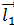
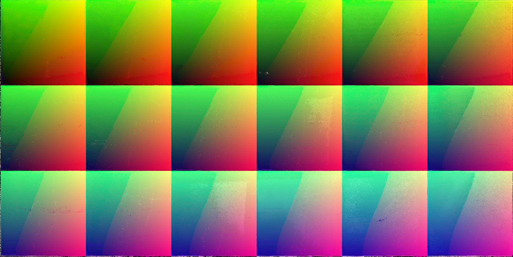

Multi-view Environment Matting
Yuguang Lee, Xuan Luo, Brian Curless
Abstract
Matting and compositing a reflective/refractive object like a glass cup into a new environment and make it look realistic from different perspectives is an interesting generalization of traditional greenscreen matting. Douglas et al. introduced the environment matting method to simulate reflection/refraction effect for single perspective in 1999 [1]. To solve our multi-view environment matting problem, we implemented the traditional single-image environment [2] method and incorporated interpolation to generate environment matting for unseen perspectives. Experiments using DSLR images and iPhone videos demonstrate promising results for both single-view enviroment matting and interpolation. We also did experiments with Lytro-Illum camera and structure from motion to calibrate camera positions. They didn't turn out to be successful but is a great lesson to learn.
Introduction

Although matting and compositing have proven very useful in film industry, they fail to simulate reflection and refraction effect. Especially when the object is translucent or glossy, refraction and refraction are also coupled with various light scattering effects. Light attenation and scattering of light according to wavelength will further complicate the problem.
Environment matting, by Douglas et al. in 1999 [1], aims at generalizing the traditional matting and compositing process to incorperate all of these effects. However, they only solved the single-view environment matting problem, which is to make reflective/refractive object look realistic from a single perspective. If we want to make a reflective/refractive object in a virtual scene look realistic from different perspectives to interact with it, we need to solve the multi-view environment matting. Since it is impractical to scan the object from all possible perspectives, we want to interpolate environemnt matting of unseen perspectives based on the environment matting of captured views. We will review the single-view environment matting by Douglas et al. [1], describe our interpolation method, and show the experiment results. Because calibrating camera position helps to render environment matting for a given perspective, we tried Lytro-Illum camera and structure from motion as introduced in Appendix A and . These trials didn't turn out to be successful but we learned lessons from these experiment.
Single Image Matting
The task of single view environmental matting is to find the corresponding light-transport path and attenuation for each visible point on object surface. Given a photograph in front of an object, we are trying to find the corresponding background pixel overlapping with each pixel in the image which are found on the target object. The corresponding relation could be found using two existing method which are mentioned in [1], , namely a spatial-based background searching method and a color-based background pixel searching method. In this project, we choose to use the latter to find the corresponding pixels, which requires only one single background with carefully designed color background. The RGB environment matting equation could be approximated as C = rau*T(c), where C is the observed RGB color responses, rau is the color attenuation and T(c) is the original color response displayed at position c. Given original image and the observed foreground image, we are solving for rau and cx, cy. The attenuation rau is defined as the ratio ||C||/||T||, where C and T are intensity vectors in RGB three channels.
In order to find the corresponding background pixel of each foreground pixel, we design the background to be a LCD monitor, which displays color wash pattern. The color surface in RGB frame of the pattern should not include any overlap when viewing from the origin of the coordinate system. Then hierachical searching is performed to look for corresponding background pixel for each pixel on the object, which gaves us the largest rau value. This process is shown in the figure below. A pixel is defined as a specualr reflectance point when rau is above one, which in our project was not considered as a special case.
Matting Interpolation
Single image environmental matting enables us to generate the view through a transparent object. As we mentioned above, by simply processing a color wash backgrounded video frame by frame, we can generate the video with different backgrounds and same camera, object and background positions. However, this technique is not able to give us free viewing position matting, unless we scan all over the positions with very small intervals around the object and process each frame of captured images. For this reason, this mission seems impossible to achieve in 3D space.
At every observing position, environmental matting gives us the light path each foreground pixel corresponding to. Given a point on the object observed from two different positions and , we can solve for two light paths which represent two light transmitting directions and . Now position is between point and along the line , where , . If these two viewing position and are not too far away from each other, we would approximate the light transmitting direction observed at position as (as is shown in the figure below on the right, where the yellow vector is to be interpolated). Under this assumption, we could interpolate between several close viewing positions of a same foreground point. Consequently, given a set of viewing positions towards the same object, where each of them has at least three close neighbors and they are one different planes with itself, we could interpolate the object matting of any viewing position within the convex hull of these viewing positions.
In this project, we are using flat LCD screen as the background of the object. For a point attenuation on the object, which is found in several images with different viewing positions , the matting position and attenuation at an uncaptured viewing position could be interpolated with the following functions, where is the numerical weights for captured each position . , is usually monotonically decreasing as the distance between and increases.
To work on this interpolation, first of all, we need to calculate the environmental matting for each input images. And we need to provide the accurate viewing position (camera position) for each of them. This gives us weight in the interpolation. Then we need to match the pixelwise corresponding position on the object from different images. This step provides us the correct,and for each foreground pixel. However, because of occlusion, not every point on the object will receive the matting information from all of the input images. We'll discuss about this problem in the following paragraph. Also note that this plan seems to be composed of a lot of complicated algorithm, for example, finding matching point on transparent object. We simplified our interpolation problem, which will be introduced.
Simple Matting Interpolation
Without knowing camera position for each single input image, we simplified the problem down to interpolate viewing position between two existing positions along the line. Our dataset are color wash backgrounded images which were taken at two different camera heights along a curve, which are shown in figure below. Assuming two camera viewing positions are close to each other, we could roughly overlap the segmented object from one image to the other with translation. The most naive idea is to linearly interpolate the matting position and attenuation of each overlapping object pixel using distance ratio as a weight. Then we shift the interpolated object back to its corresponding position, which is interpolated using the positions extracted from the starting and end image. However, this requires us to sample the viewing space with very many viewing positions to make sure images we use here are close enough to give us good overlapping. Even by this way, the edge of object will look blurred, as we are averaging the pixel between a matted pixel and an unmatted one.
Object images are composed of different parts with different depths. This gives each part of the image a different moving speed as we change our viewing position, for example the straw and cup body in figure above on the right. In this project, we manually segmented the image based on their depth and edge information as is shown in figure above on the right. Several method we have tried included minimum spanning tree graph cut, edge based connected component. However, we need more time to improve the segmenting accuracy of these methods. Then we implement the naive interpolation method on manually segmented parts. Eventually we overlaid different layers back into the image at their corresponding positons. This gives the rendered Video as follows.

In general, these two video gives us the idea of environmental matting through a transparent object. As we only used matting matrices with half of the original spatial resolution in the matting interpolation, the video quality isn't as good as the others in this report. The boundary of the object look unnatural because of sudden changes between an object pixel and its neighboring background pixels. However, this could be fixed by using anti-alias technique, in which we feather the interface between object and background. As you can also see that our algorithm works better in horizontal movement video () than the diagonal movement video in general. In diagonal movement case, the shape of the top opening part of the cup changed in two images as we raise our camera position. As a result, the top part of the cup looks blurry in the video when it changes between two input images. In the meantime, the bottom part of the cup in video looks different from the upper body. This is because it could only be found in figure.
Camera view transformation
In order to recover the camera view through a transparent object, we need to transform the generated screen view back to camera coordinate system. This task is very simple to achieve on the starting and ending images, as their screen views are directly converted from the camera view using 8 point homographic transformation matrix. Given these two projection matrices for these two images, we can actually linear interpolate the matrices for the views generated in between them. For a pinhole camera, the transformation matrix is usually approximated as the product of skew matrix K, camera rotation matrix R, scaling matrix S and translation matrix T.
The skew matrix usually comes from camera intrinsic parameters, such as focal length etc. It accounts for perspective, affine effect on the image. In this project, so far we assumed this matrix to be identity, which was eventually proved to be very inaccurate. And we broke the transformation matrix into the remaining three components, which were then linearly interpolated. We took variable as the camera translation T and used singular value decomposition (SVD) on the remaining part to orthogonalize the transformation matrices. SVD enables us to mathematically decompose into approximated R andS, namely and . However, the reconstructed F using might be very inaccurate from the real F. That's the reason our reconstructed camera view in Video doesn't look so close to the ground truth image as in Figure .
To interpolate the rotation matrices of intermediate views, we used spherical linear interpolation (SLERP) on of the starting and ending views. The idea of SLERP is to convert rotation matrix to quaternion, which is basically orientation vector in radiance, and interpolate between different angles to find the intermediate orientation and rotation matrix. The translation matrix and scaling matrix of an intermediate view are generated by linearly interpolating each element in ,
The recovered camera view is shown in Video. The viewing angle doesn't look correct in the video, which is caused by our oversimplified decomposition of transformation matrix F.
Experiments
We did experiments using DSLR camera and iPhone camera on single-view environment matting, see Sec. Single-view Environment Matting. To approach multi-view environment matting, we did experiments with iPhone video, Lytro-Illum camera, and interpolated unseen perspectives between two views captured by DSLR camera.
Single-view Environment Matting
The following figures show results from DSLR camera (left) compared with ground truth photo (right). Because we used single-image environment matting, we can render a new video with arbitrary background by generating environment matting frame-by-frame. In the videos, we poured water into the glass cup and recorded using iPhone in the left video and then we rendered the video on the right frame-by-frame. It looks realistic.
Multi-view Environment Matting
Our initial goal for multi-view environment matting is 1) to have a hand-held camera recording a video while moving freely. And then 2) we calibrate the camera positions. And finally, based on the camera positions and views we captured, we can 3) interpolate unseen perspectives. However, each of the three components turned out to be complicated. We shall examine them one by one in the sequel.
Hand-held Camera
The video on the top is recored using iPhone and we rendered the bottom video frame-by-frame. Although it looks not bad, it has obvious wobbling effect and is not temporally consistent enough. Part of the reasons are 1) obvious rolling camera effect in the input video, 2) auto mode in video capturing which implies that the exposure settings would possibly change during the capture. (We did notice the color change in the background.) 3) poor color quality (the red color on the upper-left corner of the background patterns looks orangish in the video). And therefore, even frame-by-frame rendering of seen perspectives is not as easy as we expected.
Camera Position Calibration
To calibrate camera positions, we tried Lytro-Illum camera, see Appendix A and Structure from Motion Appendix A , see Appendix B.
View Interpolation
Appendix
A. Attempts using Lytro-Illum Camera
To calibrate the camera positions, we tried to use Lytro-Illum camera. It is conceptually an array of cameras taking pictures at the same time. So a single shot with Lytro camera would give you multiple perspectives from a calibrated array of cameras. Promising as it seems, our first attempt, however, was not very successful.
 c)
c)
The reason for this is that Lytro has bad chromatic abberation. So we analysed the chromatic abberation, obtained a better color wash pattern and tried to correct the color, as discussed in the sequel. Nevertheless, so many colors are captured as the same in Lytro that the color correction didn't work. But we discovered that multiple patterns would help to obtain better mapping.
Lytro's Chromatic Abberation and New Pattern
c)
 d)
d) e)
e)
Colors captured by Lytro camera differ a lot from the reality. a) shows the pattern generated by the computer. b) is the picture taken by Lytro. The distinction is more obvious if we look at c-e) which shows each channels of the Lytro photo separately. Since we use a color wash with R,G,B changes from 0 to 255 linearly, we are supposed to see a linear black and white color gradient. However, there is an obvious color cut-off in each channel. Consider the red channel, for example. Many positive values in red channels are observed as zero. Therefore, we restrained each channel of our color wash pattern to avoid the values below the cut-off and obtained the following new pattern.
Color Correction
We did color correction to map the observed colors by Lytro back to the original color generated by computer. To do this, we first generate color wash grids as in a-b), where red (R) and greens (G) runs from 0 to 255 within each grid and blue (B) of different grids are 0, 10, ... 250. We then took pictures of these color washs in c-d).

c)
 d)
d)e) f)
These patterns and photos can give us a color map from the pattern color to the observed color by Lytro. The mapping can be considered as a cube of color, indexed by the pattern color, holding the observed colors as values. And then we interpolated the observed color to fill the whole mapping cube. More specifically, given pattern color [r,g,b] not included in our color wash, we linear interpolated it using another two colors, [r,g,b1] and [r,g,b2], with the same R and G and the closest B. Then we inverted the mapping to obtain the mapping from the observed color to the original pattern color. If multiple pattern colors map to the same observed color in the original color cube, we average them when computing the inverse.
Multiple Patterns Help to Reduce Effect of Color Abberation
Fig. b1-b2) show the results using only single corresponding pattern in a1-a2). Fig. c) shows the result when both patterns are taking into account. Consider the similarity of position p1 on the cup with position p2 on the background. Let the two patterns be T1 and T2, the two pictures with object be C1, C2, and Ti(p) (or Ci(p)) denotes the color on Ti (or Ci) at position p. We define the similarity as S(p1,p2) = cos(C1(p1), T1(p2)) + cos(C2(p1), T2(p2)). Possibly, some parts that are not discernible using one pattern is told apart with another texture.
b1) b2)
The following is a video generated from a single shot of Lytro camera using only single pattern (we didn't have enough time to generate videos using multiple patterns.)
B. Structure from Motion
We used structure from motion (SfM) [3] to solve for the camera position and orientation of each image. SfM uses stereo images to estimate three-dimensional structures of objects. It also provides the camera position and orientations, which are required in our interpolation. Typically, SfM extracts 2D features, mostly texture based features such as SIFT, SURF and Harris corner detector, from the input images. By matching them between different images, the algorithm is able to use the 2D position in different images of the same point to determine the transformation before images and object image depth and camera position.
In our experiment, we photographed the object from multiple viewing positions. The object was placed in front of a monitor, which displayed different background patterns in a dark room. There were several opaque objects besides the object, which were supposed to be used in SfM feature matching. A dimmed flashlight was placed behind the camera. After taking multiple images, we tried to use visualSfM software to reconstruct the 3D structure of the scene. However, the opaque objects are really dark in the images. And all of our objects seem too smooth to provide any texture based feature points. VisualSfM was unable to pick up any matching features using SIFT, SURF or Harris corner detector. Because of our limited time, we didn't take more data to reconstruct camera positions.
Reference
- Zongker, Douglas E., et al. "Environment matting and compositing." Proceedings of the 26th annual conference on Computer graphics and interactive techniques. ACM Press/Addison-Wesley Publishing Co., 1999.
- Chuang, Yung-Yu, et al. "Environment matting extensions: towards higher accuracy and real-time capture." Proceedings of the 27th annual conference on Computer graphics and interactive techniques. ACM Press/Addison-Wesley Publishing Co., 2000.
- Wu, Changchang. "VisualSFM: A visual structure from motion system."URL: http://homes. cs. washington. edu/~ ccwu/vsfm 9 (2011).